Before doing anything NeRF-related, I needed my phone camera to talk to me in metric.
This meant estimating its intrinsic matrix K and distortion
coefficients dist from a printed ArUco board, so that later poses and rays
are geometrically consistent.
Board and Data Collection
I used a custom 3×2 ArUco grid (row-major IDs 0–5) with known geometry:
Square side length: 0.053 m
Horizontal gap between squares: 0.027 m
Vertical gap between squares: 0.014 m
Dictionary: cv2.aruco.DICT_4X4_50
I printed this board (or displayed it on a screen) and used my phone camera (fixed zoom, no digital zoom changes)
to capture roughly 30–50 images from different angles and distances.
I defined the 3D world coordinates of every marker corner on the plane z = 0.
Each marker at grid position (r, c) is placed using its square size and gaps:
def build_custom_board(rows, cols, square_m, gap_x_m, gap_y_m, dict_name="DICT_4X4_50"):
aruco = cv2.aruco.getPredefinedDictionary(getattr(cv2.aruco, dict_name))
obj_pts, ids = [], []
for r in range(rows):
for c in range(cols):
x0 = c * (square_m + gap_x_m)
y0 = r * (square_m + gap_y_m)
obj_pts.append(np.array([
[x0, y0, 0.0],
[x0+square_m, y0, 0.0],
[x0+square_m, y0+square_m, 0.0],
[x0, y0+square_m, 0.0],
], dtype=np.float32))
ids.append([r*cols + c])
obj_pts = np.stack(obj_pts, axis=0)
ids = np.asarray(ids, dtype=np.int32)
board = cv2.aruco.Board(obj_pts, aruco, ids)
return aruco, board
This matched the assignment’s requirement to define 3D coordinates for each tag corner (e.g. for a 0.02 m square you’d
use coordinates like (0,0,0), (0.02,0,0), etc.). I just generalized it to an entire grid.
Detecting Markers and Handling Failures
For each image in data/calib_jpg/, I detected markers, grabbed their 2D corners, and skipped
any frames with no usable detections (so the script never crashes):
def read_images_any(dirpath):
return sorted(
glob.glob(os.path.join(dirpath, "*.jpg"))
+ glob.glob(os.path.join(dirpath, "*.jpeg"))
+ glob.glob(os.path.join(dirpath, "*.png"))
)
def detect_all(dirpath, aruco):
det = cv2.aruco.ArucoDetector(aruco, cv2.aruco.DetectorParameters())
per_img, img_size = [], None
for p in read_images_any(dirpath):
img = cv2.imread(p)
if img is None:
continue
g = cv2.cvtColor(img, cv2.COLOR_BGR2GRAY)
if img_size is None:
img_size = g.shape[::-1] # (w, h)
corners, ids, _ = det.detectMarkers(g)
per_img.append((corners, ids))
assert img_size is not None, "No readable images."
return per_img, img_size
def select_min_markers(per_img, min_markers):
sel = [(c, i) for (c, i) in per_img if i is not None and len(i) >= min_markers]
assert sel, f"No frames meet min_markers={min_markers}."
return sel
This logic is my way of implementing the “if no tags are detected, skip the image” part of the
assignment, plus an extra filter on the minimum number of markers to keep clean frames.
Calibrating and Pruning
After detection, I packed all the corners and IDs into the format expected by OpenCV’s
calibration routine and ran calibration twice: once on all valid frames, then again after
pruning the worst reprojection errors.
Associates them with 3D world coordinates on the board.
Calibrates the camera to estimate K and dist.
Handles images with no tags by skipping them, so it never crashes.
Saves the final parameters for later parts of the project.
Files Produced
Board file:assets/docs/aruco_grid-2.pdf
Calibration images:data/calib_jpg/*.jpg
Intrinsics:data/K.npy
Distortion coefficients:data/dist.npy
Calibration script:src/part0_calibrate.py
Example overlays:assets/figs/0*_IMG_*.jpg
Part 0.2 — Capturing a 3D Object Scan
For my NeRF object, I picked a plush duck and placed it on a tabletop next to a single printed
ArUco tag (with a clear white border so detection works reliably). I used the same phone camera and zoom
setting as in Part 0.1, stood about 10–20 cm away so the duck filled roughly half the frame,
and moved around it horizontally and vertically to get a full set of views.
Total frames captured in data/scan_jpg/: 87
Frames with a detected tag: 84
Frames kept after QC (for NeRF training): 40
I avoided auto-exposure jumps by using a printed tag instead of a screen and watched for motion blur by making sure the object did not move between images.
Sampling and Quality Control
I wrote a small script to scan all images, detect the ArUco tag, and rank frames by sharpness and exposure before
keeping the best keep_k images:
Frames without a detected tag (or with the wrong tag ID, if I set --tag_id ≥ 0) are marked
detected = 0 and never considered for the top-K set.
Gallery — Kept Frames
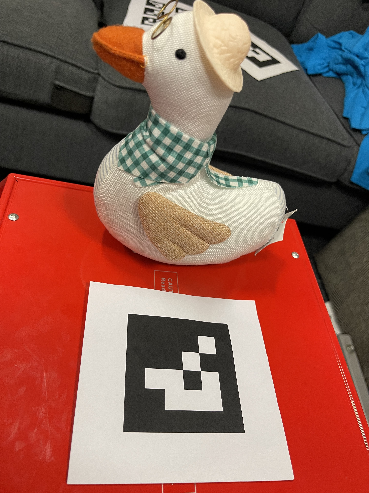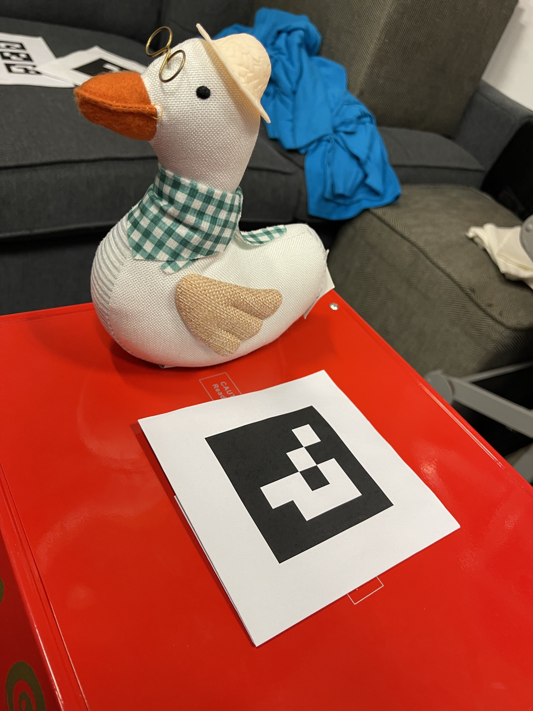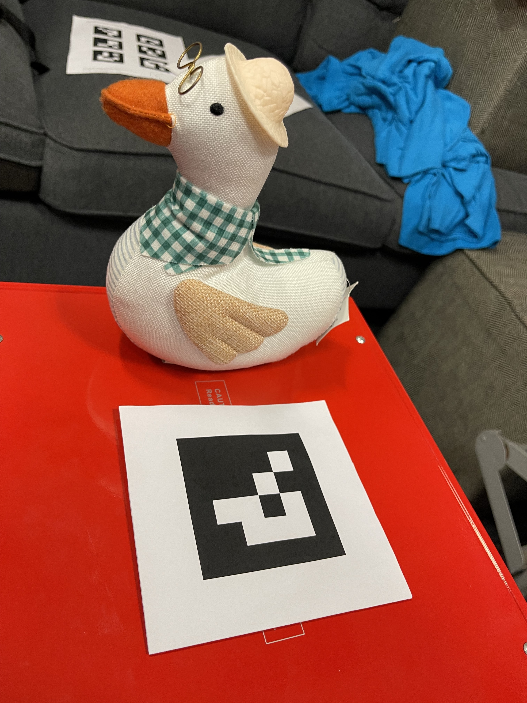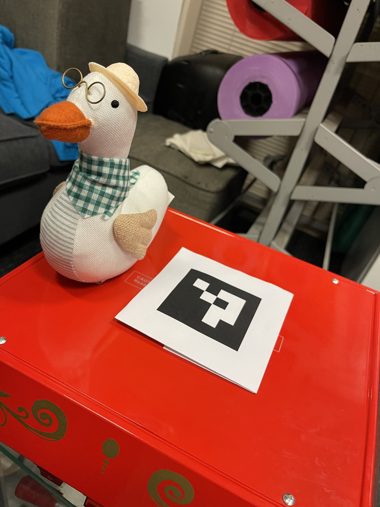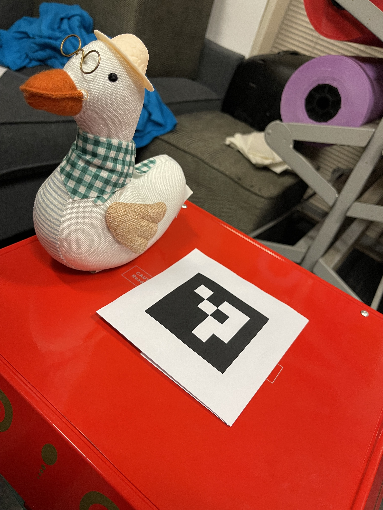
Detections — Overlays
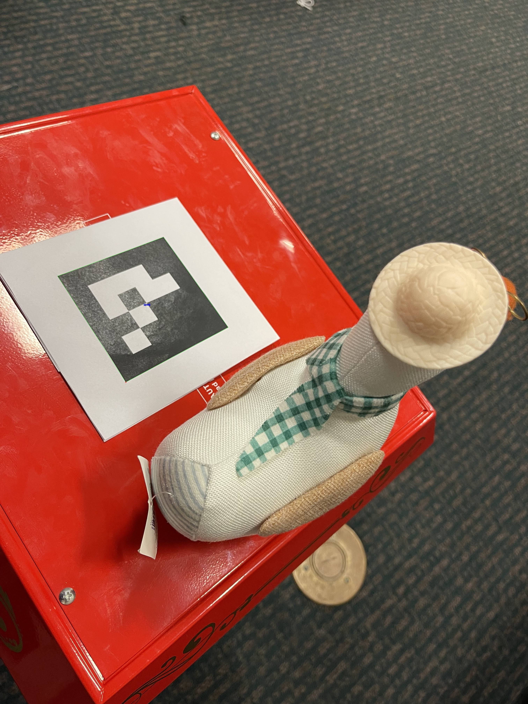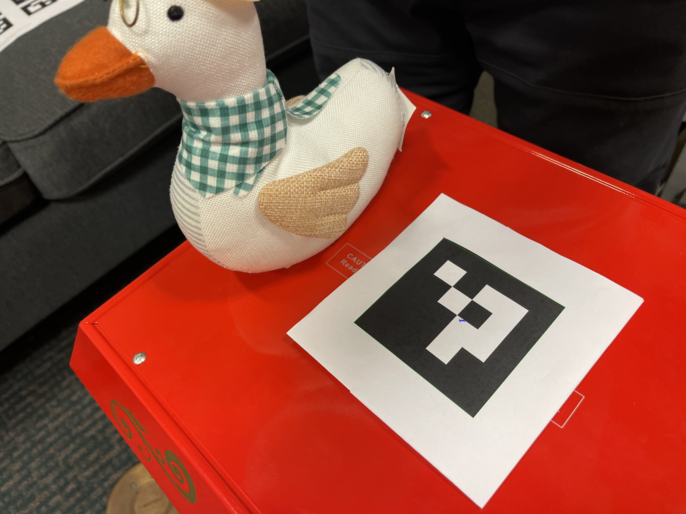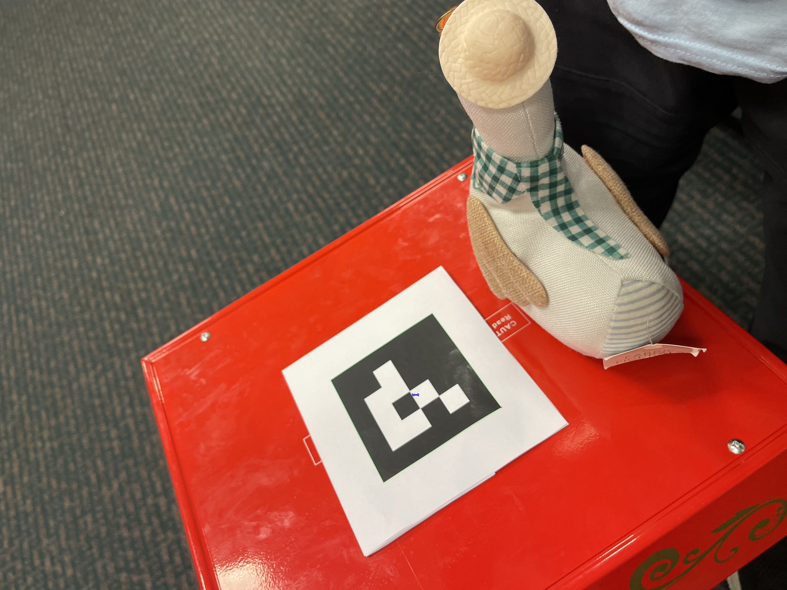
QC Summary
Full per-frame stats (path, detection flag, number of markers, sharpness, brightness, overlay path, kept path) are
logged in:
scan_qc.csv.
Ranking rule: score = LaplacianVar − 0.5 × |brightness − median_brightness|, then keep the top
keep_k = 40 detected frames.
Part 0.3 — Estimating Camera Pose
Now that I had intrinsics K and dist from Part 0.1 and a cleaned scan sequence from Part 0.2,
I estimated a camera pose for each image of my plush duck. For every frame, I detected the single ArUco tag,
solved a Perspective-n-Point (PnP) problem, and then converted the result into a camera-to-world (c2w) matrix.
Pose Estimation Pipeline
Detect the ArUco tag.
For each image in data/scan_keep/, I ran my Aruco tag detector code to get:
corners: 4 image points (TL, TR, BR, BL)
ids: the marker ID(s)
If no tag was detected (i.e., ids is None or empty), I skipped the frame so the script never crashes.
Define 3D object points.
I modeled the tag in meters as a centered square lying on z = 0, with side length
tag_size_m:
This gives the objectPoints input for solvePnP (shape (4, 3)).
Match 2D ↔ 3D and scale intrinsics.
I reshaped the detected 2D corners into (4,1,2) for imagePoints, and scaled
K from the calibration resolution to the current image resolution so that the focal lengths and
principal point are correct:
K_scaled, sx, sy = scale_K_to_size(K, src_wh=(3024, 4032), dst_wh=(W, H))
K = K_scaled
Solve PnP for world→camera pose.
With objectPoints, imagePoints, K, and dist, I called:
These 4×4 matrices are what I save for NeRF and for visualization.
Check pose quality with reprojection RMSE.
For each frame, I projected the 3D tag corners back into the image and computed RMS reprojection error (pixels):
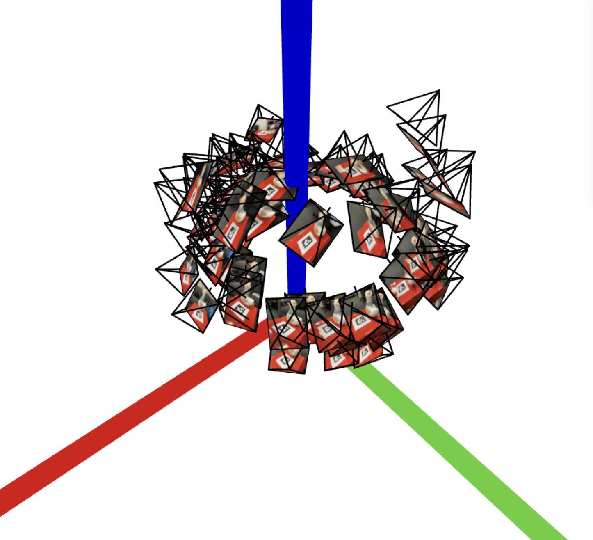
Viser camera cloud (angled view): frustums wrap around the plush duck.
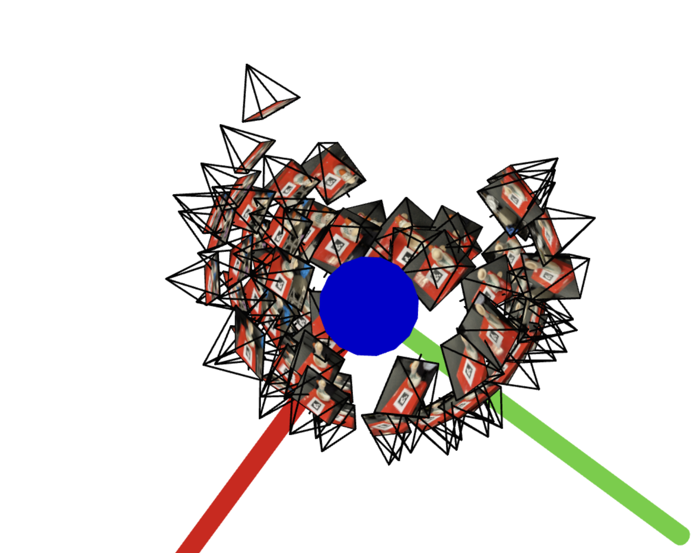
Viser camera cloud (top-down view): nice ring-like coverage in azimuth.
Viser screenshots:assets/figs/pose_angle.png, assets/figs/pose_topdown.png
Part 0.4 — Undistorting Images and Creating the Dataset
With intrinsics K, distortion dist, and camera poses from Part 0.3,
I built the final NeRF-ready dataset. I first undistorted every image so the camera behaves like
an ideal pinhole model, then split the sequence into train/val/test and saved everything into
my_scan.npz in the same format as the provided Lego dataset.
Resolution (undistorted): 4032 × 3024
Split: 39 train, 7 val, 6 test (total 52)
Focal used in NeRF: ≈ 3536 px (scalar, fx ≈ fy)
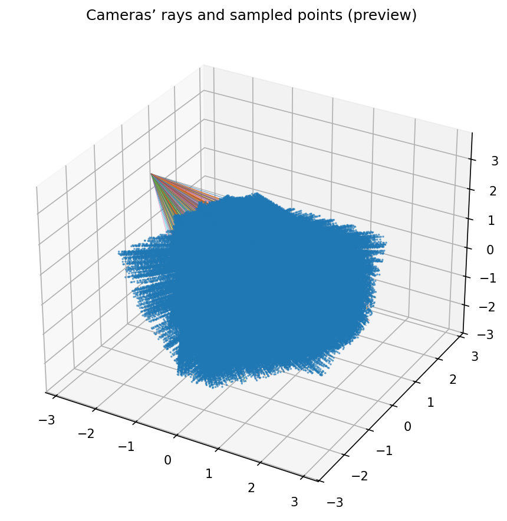
Summary visualization of rays and 3D sample points.
Undistortion (Handling Black Borders and Intrinsics)
I undistort all the images referenced in poses_c2w.npz using the calibration from Part 0.1.
To avoid black borders and keep a consistent intrinsics model, I use
cv2.getOptimalNewCameraMatrix + cv2.initUndistortRectifyMap +
cv2.remap, and I force the principal point to the image center:
def undistort_all(image_paths, K_base, dist, out_size=None):
imgs_u = []
fxs, fys = [], []
H0 = W0 = None
for p in image_paths:
img_bgr = cv2.imread(p, cv2.IMREAD_COLOR)
if img_bgr is None:
raise RuntimeError(f"Unreadable image: {p}")
h, w = img_bgr.shape[:2]
newK_opt, _ = cv2.getOptimalNewCameraMatrix(
K_base.astype(np.float32), dist.astype(np.float32),
(w, h), alpha=0
)
fx, fy = float(newK_opt[0,0]), float(newK_opt[1,1])
cx_c = (w - 1) * 0.5
cy_c = (h - 1) * 0.5
newK_cent = np.array([[fx, 0.0, cx_c],
[0.0, fy, cy_c],
[0.0, 0.0, 1.0]], dtype=np.float32)
map1, map2 = cv2.initUndistortRectifyMap(
K_base.astype(np.float32), dist.astype(np.float32),
R=None, newCameraMatrix=newK_cent,
size=(w, h), m1type=cv2.CV_32FC1
)
und_bgr = cv2.remap(img_bgr, map1, map2, interpolation=cv2.INTER_LINEAR)
if out_size is not None:
Ht, Wt = out_size
sx = Wt / float(w); sy = Ht / float(h)
und_bgr = cv2.resize(und_bgr, (Wt, Ht), interpolation=cv2.INTER_AREA)
fx *= sx; fy *= sy
h, w = Ht, Wt
cx_c = (w - 1) * 0.5
cy_c = (h - 1) * 0.5
imgs_u.append(und_bgr[..., ::-1]) # BGR→RGB
fxs.append(fx); fys.append(fy)
if H0 is None:
H0, W0 = h, w
else:
if (h, w) != (H0, W0):
raise RuntimeError("Images have differing sizes; pass out_size to standardize.")
images = np.stack(imgs_u, axis=0).astype(np.uint8)
focal_out = 0.5 * (np.mean(fxs) + np.mean(fys)) # fx≈fy
return images, H0, W0, float(focal_out)
This matches the assignment’s suggestion of using getOptimalNewCameraMatrix to deal with black borders,
and I explicitly keep track of the updated focal length (scalar) after any resize.
Building my_scan.npz
The script src/part0_make_dataset.py ties everything together:
As a sanity check, I reproject the ArUco corners on the undistorted images using the saved poses and focal, and
inspect overlays of detected vs. reprojected corners. Most frames sit within a reasonable reprojection error range,
and obvious outliers were already removed in Part 0.3.
Part 1 — Fitting a Neural Field to a 2D Image
Before moving into 3D NeRFs, I first built a 2D neural field that maps normalized pixel
coordinates (x, y) ∈ [0,1]^2 to RGB colors (r, g, b) ∈ [0,1]^3.
Instead of storing the image as a grid of pixels, the model learns a continuous function
that returns the color at any coordinate.
Model and Training Setup
Positional Encoding (PE).
For each coordinate (x, y) I apply a 2D sinusoidal encoding with max frequency L:
[x, y, sin(2^kπx), cos(2^kπx), sin(2^kπy), cos(2^kπy)] for k = 0,…,L−1.
This maps ℝ² → ℝ2+4L. For my baseline L = 8, the MLP input dimension is
2 + 4·8 = 34.
MLP (FieldMLP).
Coordinate-based MLP with:
Input dim: 2 + 4L (PE output).
Depth: 3 hidden layers.
Width: 256 channels per hidden layer (baseline).
Nonlinearity: ReLU after each hidden Linear.
Output: Linear(..., 3) + Sigmoid to keep RGB in [0,1].
Dataloader (PixelSampler).
I flatten the image into a grid of pixel indices. Each iteration I randomly sample
N = 10,000 pixels:
Coordinates: x = col / W, y = row / H ∈ [0,1].
Colors: image values normalized to [0,1] by dividing by 255.
Batch: (coords[N,2], rgbs[N,3]).
Loss, optimizer, and metric.
Loss: MSE between predicted and ground-truth RGB.
Optimizer: Adam, learning rate 1e−2, with cosine annealing.
Batch size: 10k pixels; iterations: 1000–3000 depending on the run.
Metric: full-image PSNR each iteration,
PSNR = 10 log10(1 / MSE) (image normalized to [0,1]).
Code.
Implemented in fit_2d_field.py with
PositionalEncoding2D, FieldMLP, PixelSampler,
train_once, and hyperparam_grid.
Provided Image: Fox
I started with the provided fox image to confirm that the network can learn a natural photo from coordinate inputs.
The model first reconstructs very low-frequency structure, then gradually sharpens edges and texture.
Fox run: width = 256, depth = 3, L = 8, learning rate = 1e−2, batch = 10k, iters = 1500, side ≈ 128 px.
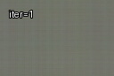
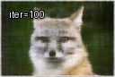
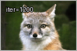
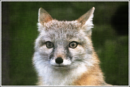
Final neural-field reconstruction of the fox image.
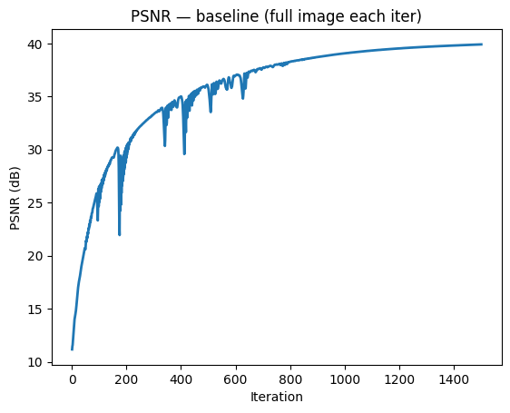
PSNR curve for the fox image. The curve rises quickly during the first few hundred iterations
as low-frequency structure is learned, then improves more slowly as high-frequency details are refined.
My Image: Hand and Coffee Mug
I also trained on my own photo of a hand holding a coffee mug on a wooden table.
This scene has smoother gradients and more color variation, which tests the model’s ability to fit continuous tone.
Coffee run: width up to 512, L up to 12, learning rate 1e−2, batch = 10k,
and about 3000 iterations on a side ≈ 256 px crop.
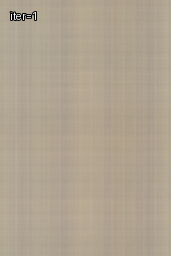
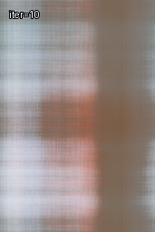
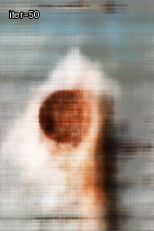
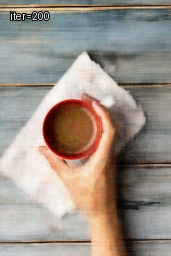
Final neural-field reconstruction of my coffee image.
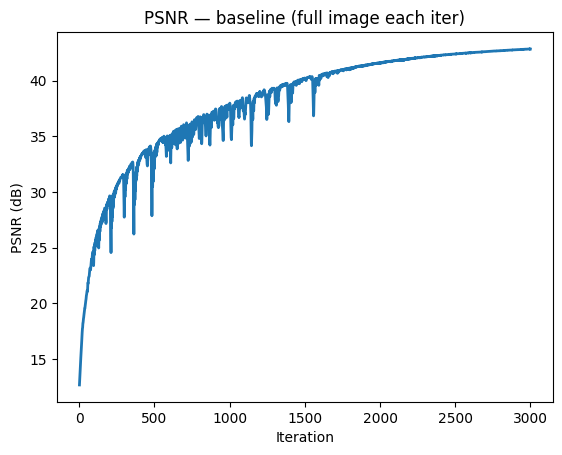
PSNR curve for the coffee image. With a wider network and longer schedule, convergence is smoother
and subtle shading on the table and mug is captured well.
Hyperparameter Grid: Width and Max Frequency L
I used the hyperparam_grid helper to study how hidden-layer width and maximum positional-encoding
frequency L affect final reconstruction quality. I trained four models in a 2×2 grid:
Widths: 64 and 256.
Max PE frequencies: L = 4 and L = 8.
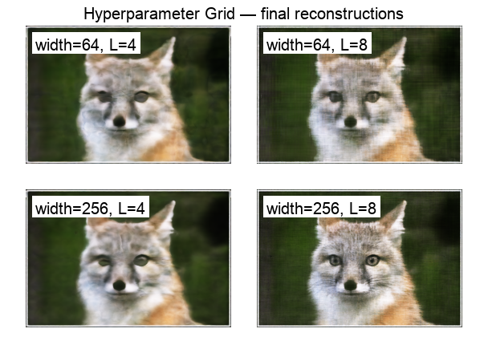
Fox hyperparameter grid. Low width and low L oversmooth the image; increasing width or L improves detail,
and the combination (width = 256, L = 8) closely matches the ground truth.
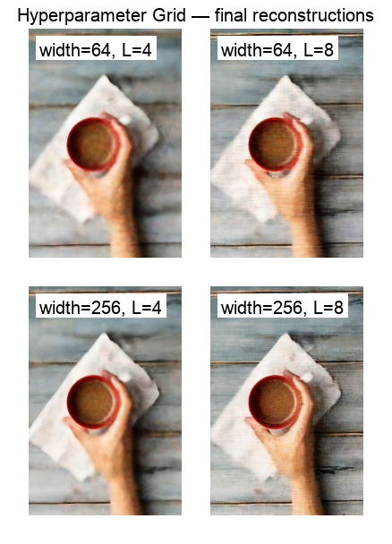
Coffee hyperparameter grid. The same pattern appears: higher frequency encodings and a wider MLP are needed to
recover sharp edges and fine texture.
Checklist — Part 1 Deliverables
Report model architecture.
I report number of layers, width, PE dimension, activation functions, and learning rate in the
“Model and Training Setup” section.
Show training progression on both images.
I include iteration snapshots for the provided fox image and my own coffee image.
Show final results for 2 choices of L and 2 choices of width.
I run a 2×2 grid (width ∈ {64, 256}, L ∈ {4, 8}) and display final reconstructions for both images.
Show PSNR curve for training on one image.
I plot PSNR vs. iteration for the fox run (and also for the coffee run) using the MSE→PSNR formula on
normalized images.
Part 2 — Fit a Neural Radiance Field from Multi-view Images
After fitting a 2D neural field in Part 1, I now move to a full 3D Neural Radiance Field (NeRF) using
multi-view calibrated images of the Lego scene. Instead of mapping 2D pixel coordinates to colors, the network
now maps 3D positions (and view directions later) to color and density, and I train it via inverse rendering over
many camera views.
The project provides a pre-packed dataset lego_200x200.npz with images and camera poses split into
train, validation, and test cameras. I load it as follows:
Later subsections of Part 2 build on this dataset:
Part 2.1 creates rays from cameras, 2.2 samples points along rays,
2.3–2.5 train and evaluate the NeRF, and 2.6 renders a spherical Lego video.
Checklist — Part 2 (overall goals)
Rays and samples with cameras. Implemented in Parts 2.1 and 2.2, with visualizations.
Training progression. Predicted images across iterations for the Lego scene (later sections).
Validation PSNR curve. Track NeRF quality on the validation split.
Spherical rendering video. Use the provided test cameras to render a novel-view Lego video.
Part 2.1 — Create Rays from Cameras
Before I could train a 3D NeRF, I needed a way to convert every pixel in every
image into a ray in world space. NeRF never feeds images directly into the
network — it only consumes rays: origins ro and directions
rd. This section shows how I built these rays from the camera
intrinsics K and camera-to-world transforms c2w.
1. Camera to World Transform
The world-to-camera equation is:
$$
x_c \;=\;
\begin{bmatrix}
R & t \\
0^\top & 1
\end{bmatrix} x_w,
$$
Here \(0^\top = [0\;0\;0]\) is a 1×3 row vector, needed to complete the 4×4
homogeneous matrix. Since the dataset provides c2w, I use
$$
x_w = c2w\, x_c.
$$
I implemented transform_np using homogeneous coordinates and
verified correctness numerically using the identity:
This logic is implemented in pixel_to_ray_np, which produces both
ray_o and ray_d for a full grid of pixels.
4. Numerical Sanity Checks
inverse max err: 1.33e-15
center dir err: 5.55e-17
reproj RMSE px: 2.28e-14
|rd|-1 max err: 2.22e-16
These checks confirm: (a) the inverse transform works, (b) rays for the center
pixel align with the camera’s +Z axis, (c) reprojecting sampled 3D points lands
back on the original pixels, and (d) all directions are unit length.
5. Ray Visualization
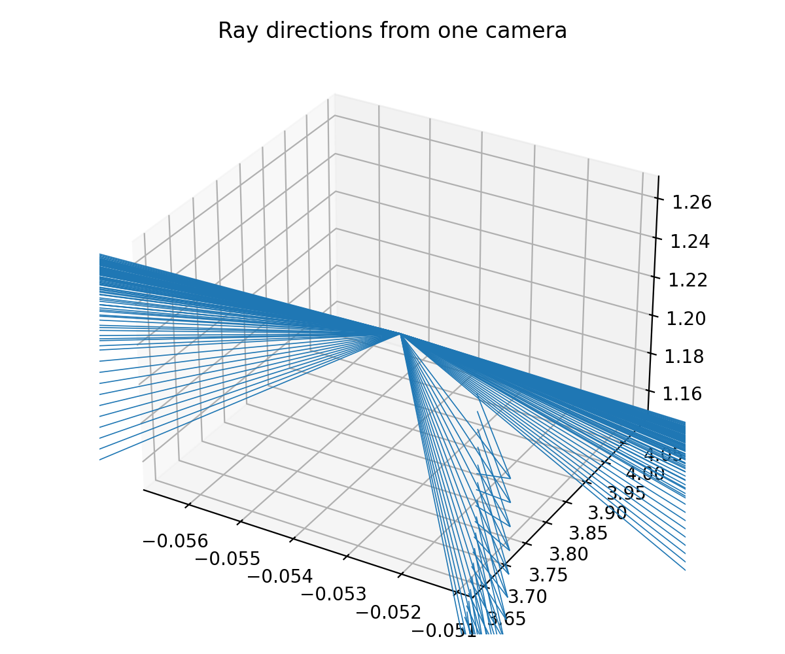
Rays emitted from a single Lego training camera. Each arrow corresponds to one
pixel's viewing direction in world space.
This figure shows exactly how the camera’s pixel grid maps into 3D. All arrows originate
from the same world-space camera center. Each arrow’s direction matches the line of
sight for a corresponding pixel after applying both the intrinsic matrix \(K\) and the
extrinsic transform c2w. Because the camera sits relatively far from the Lego
object and has a narrow field of view, the rays cluster tightly rather than forming a
wide frustum. This confirms that the ray generation logic is geometrically correct.
Part 2.2 — Sampling (Rays and 3D Points)
After Part 2.1, every pixel can be turned into a ray \((r_o, r_d)\) in world space.
NeRF training, however, happens on points along those rays. In this part I:
(1) sample rays from the multi-view Lego images, and (2) discretize each ray into
a set of 3D sample locations between a near and far bound.
1. Sampling Rays from Images
For each training step, I want \(N\) rays in total. With many images, there are two
natural strategies:
Global flat sampling. Flatten all pixels from all training images into
one big list and draw \(N\) indices uniformly at random.
Per-image sampling. Randomly choose \(M\) images, then sample
\(N/M\) rays per image.
In both cases, for each selected pixel \((u, v)\) I shift to pixel centers by adding
\(0.5\) to both coordinates:
$$
(u_c, v_c) = (u + 0.5,\; v + 0.5).
$$
Then I convert \((u_c, v_c)\) into a unit ray using the intrinsics \(K\) and
extrinsics \(\mathrm{c2w}\):
The supervising color for each ray is simply the image RGB at \((u, v)\), normalized
to \([0,1]\).
2. Sampling Points Along Rays
Given a ray origin and direction, I need a set of 3D sample locations where the NeRF
MLP will be evaluated. For the Lego scene I use:
\(\text{near} = 2.0\), \(\text{far} = 6.0\), and \(n_{\text{samples}} = 64\).
and let \(t_0, t_1\) be the left and right edges of each bin. During training I use
stratified sampling inside each bin so that every depth interval is eventually
covered:
yielding an array of shape \([N, n_{\text{samples}}, 3]\). At test time I disable
stratified jitter and instead use bin midpoints for deterministic rendering.
3. Numerical Checks
To make sure sampling behaves as expected, I run the following checks:
All directions satisfy \(\lVert r_d \rVert_2 \approx 1\).
All depth values lie within \([\text{near}, \text{far}] = [2, 6]\).
For a small ray bundle, I pick a mid-depth sample, transform back to camera space,
project with \(K\), and verify that the reprojected pixels match the original
\((u_c, v_c)\) to machine precision.
|r_d|−1 max err: ≈ 2e−16
t range: [2.00, 6.00]
Reproj RMSE (px): ≈ 2e−14
4. Visualization of Sampled Points
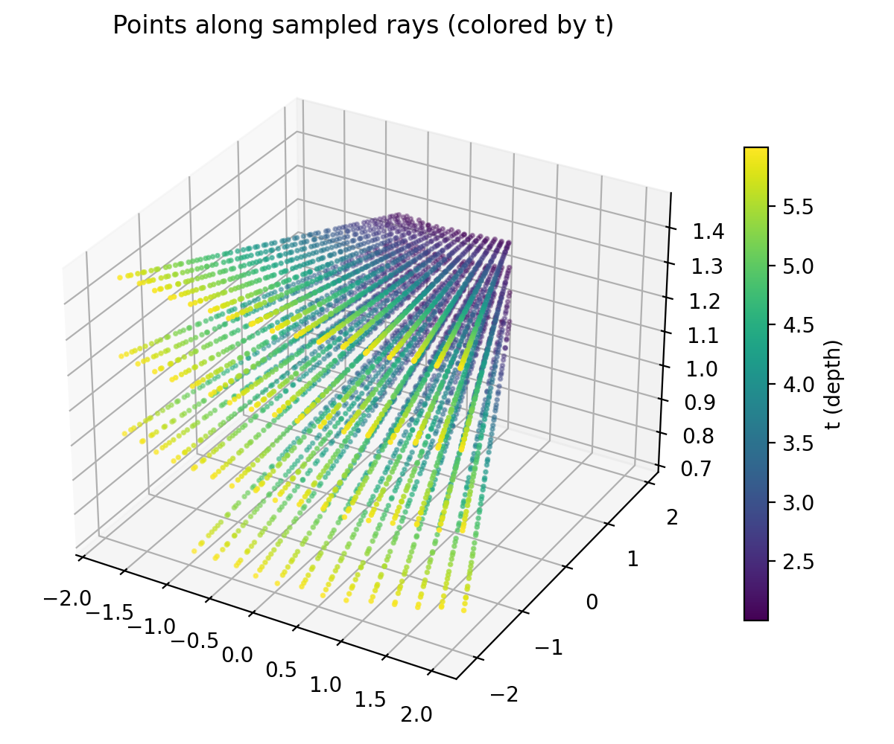
3D points sampled along a small bundle of rays.
Each dot is a NeRF query location, colored by depth \(t\) (near to far).
Together they form a truncated viewing frustum in front of one Lego camera.
The camera center itself is just outside the plotted region; we only visualize
points between the near and far planes. The dense, layered structure shows that
each ray is discretized into many depth samples and that the stratified jitter
spreads samples smoothly throughout the volume instead of locking onto a fixed
grid of 3D points.
With this section, I now have a reliable way to go from calibrated multi-view images
to millions of 3D sample points on rays, which will feed directly into the NeRF
network in the next parts.
Part 2.3 — Putting the Dataloading All Together
The goal of this part is to build a multiview ray dataloader that, given the Lego
dataset, can randomly sample pixels across all training images and return
triples
\((r_o, r_d, \mathbf{c})\) — ray origin, ray direction, and
pixel color. This extends the Part 1 2D sampler to the full NeRF setting:
every batch element is a ray in 3D plus its supervising RGB.
1. RaysData: precomputing all rays
I precompute ray origins and directions for every pixel in every training image
and store them in a flattened structure:
\(\text{images} \in \mathbb{R}^{N \times H \times W \times 3}\)
For a single camera with intrinsics \(K\) and pose \(\mathrm{c2w}\), I build a grid
of integer pixel coordinates \((x,y)\), shift to centers
\((u,v) = (x+0.5, y+0.5)\), lift to camera space, then to world space to get a
unit ray:
global — choose indices uniformly from
\(\{0,\dots,NHW-1\}\). This mixes all views in one batch.
per_image — pick \(M\) images, then sample approximately
\(B/M\) rays from each to keep batches balanced across cameras.
one_image — restrict to a single camera (used for
debugging frustums in viser).
Internally, a flat index idx is decoded back into an image index and
integer pixel coordinates:
$$
i = \left\lfloor \frac{\text{idx}}{H W} \right\rfloor, \quad
\ell = \text{idx} \bmod (H W), \quad
y = \left\lfloor \frac{\ell}{W} \right\rfloor, \quad
x = \ell \bmod W.
$$
These \((x,y)\) are then used both to construct \((u,v)\) and to index the
image tensor so that ray colors and positions are always consistent.
3. Sampling 3D points along rays
Once a batch of rays is sampled, I re-use the Part 2.2 routine to draw
\(n_{\text{samples}}\) depths \(t\) between
\(\text{near}=2.0\) and \(\text{far}=6.0\), with optional stratified jitter:
producing \(\text{points} \in \mathbb{R}^{B \times n_{\text{samples}} \times 3}\).
These points (and their rays) are what the NeRF MLP will see during training.
4. Numerical checks
To guard against subtle bugs (flipped UVs, wrong cameras, non-unit directions),
I run the following checks on each sampled batch:
Unit directions.
\(\max_b \bigl|\lVert r_{d,b} \rVert_2 - 1\bigr|\) is on the order of \(10^{-12}\).
UV → pixel consistency. For a slice of the flattened arrays
I verify that
\(\text{pixels}[k] = \text{images}[i_k, y_k, x_k]\) for all entries.
Reprojection RMSE. For a subset of rays, I take
\(X = r_o + r_d\) (depth 1), transform back into the matching camera and
project with \(K\), then compare to the pixel centers \((u,v)\).
The resulting RMSE in pixels is essentially at machine precision.
Example part2_3_checks.txt
|rd|-1 max err ≈ 1e-12
uv→pixel match OK
reproj RMSE(px) ≈ 3e-05
batch cameras { …histogram of image IDs in this batch… }
5. Visualizations (cameras, rays, and samples)
I use viser to interactively inspect the geometry:
All camera frustums drawn using their \(c2w\) matrices and focal length.
A subset of rays visualized as line segments
\(\{r_o,\; r_o + 6 r_d\}\).
Sampled points along those rays plotted as a point cloud.
When running with --mode one_image and sampling from only the first
camera, all rays and points clearly stay inside that camera’s frustum, which
confirms the UV convention and depth range.
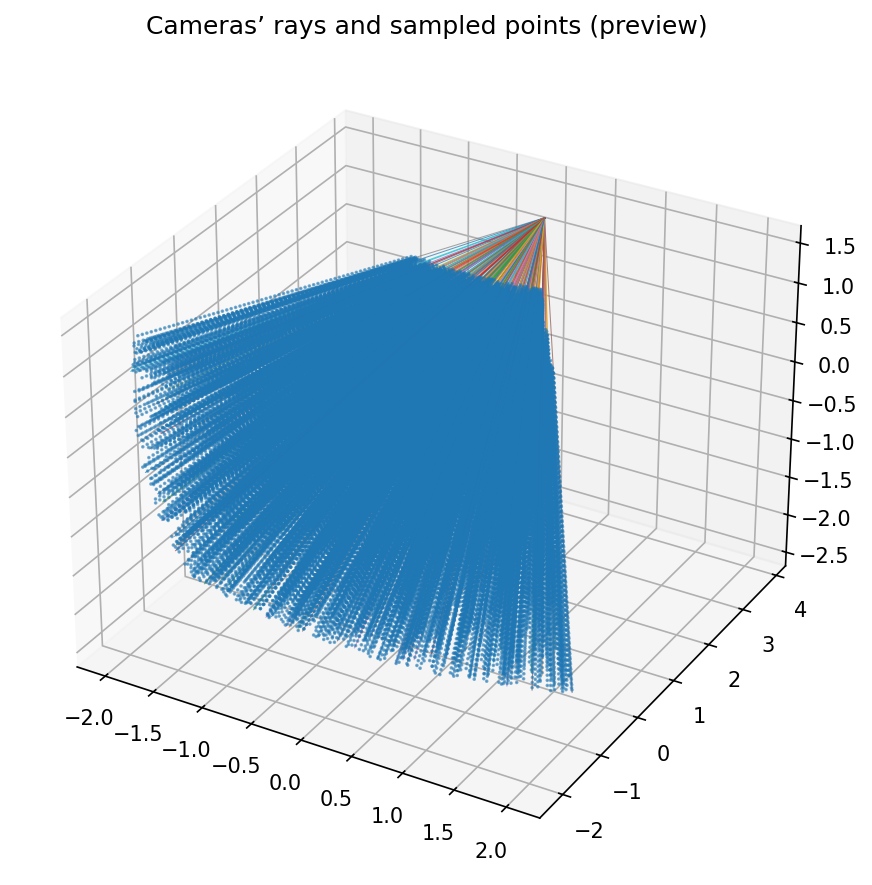
Single-camera frustum with rays and sampled points. All geometry remains inside
the pyramid defined by that view.
Rays and 3D samples drawn only from camera 0.Rays sampled from the top-left 100×100 pixel region.
Static preview of cameras’ rays and sampled points aggregated over many views.
The blue point cloud fills the volume in front of the Lego, which is exactly
the region NeRF will learn to represent.
With this dataloader in place, each NeRF training batch now consists of many rays
and stratified samples in front of the Lego object, drawing consistent, geometry-aware
supervision from all calibrated views.
Part 2.3 — Putting the Dataloading All Together
In this part I finished the multiview NeRF dataloader and then used
viser to visually sanity-check it. The dataloader
(RaysData in src/part2_3_dataloader.py) takes
the Lego training images, intrinsics K, and poses
c2w, and precomputes world-space rays for every pixel.
The viser visualizations below are as follows:
cameras drawn as frustums, rays as splines, and NeRF samples as 3D
point clouds.
How I used viser
The script exposes a --case flag to reproduce the different
visualizations:
Each run launches a viser.ViserServer(share=True) instance:
cameras are added with add_camera_frustum, rays with
add_spline_catmull_rom, and samples with
add_point_cloud. I also run the UV-flip sanity check from
the handout:
This assertion guarantees that uvs are stored as (x, y)
(width, height) and match the pixel layout of images_train.
Viser Visualizations
1. Single-camera rays + samples
Rays and stratified samples drawn only from camera 0. This is the
recommended “one camera” sanity check: every ray stays inside that
camera’s frustum and points forward into the scene.
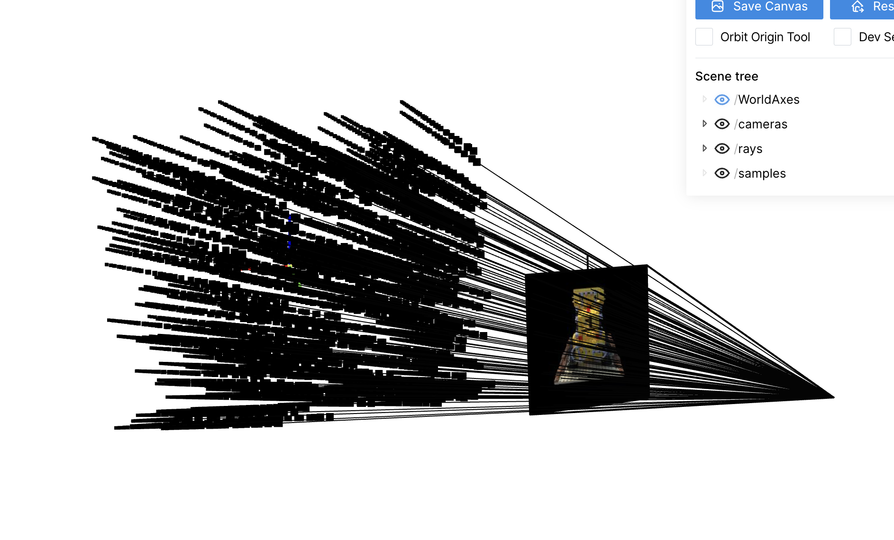
Single-camera frustum visualization with rays and sample points.
2. Random rays from the first image
Here I use the second viser script from the handout and choose random
indices within the first image. The screenshot shows the same single
camera but with a sparser, randomly selected set of rays.
Randomly sampled rays from camera 0. This confirms that the ray
origins sit at the camera center and that directions fan out across
the whole image.
3. Top-left patch rays
In this variant I restrict indices to a 100×100 patch in the top-left of
the image. The rays cluster into a narrow cone in the corresponding
region of the frustum, which double-checks the UV convention
(x is horizontal, y is vertical).
Rays from a localized patch near the top-left corner. The tight cone
matches the patch’s position in the image, so the pixel indexing is
correct.
4. Many cameras — rays only
Using --case many_cam_rays I sample rays from several views and
plot them without samples. This view emphasizes that each ray bundle
originates exactly at a camera center and that all frustums are placed
consistently around the Lego scene.
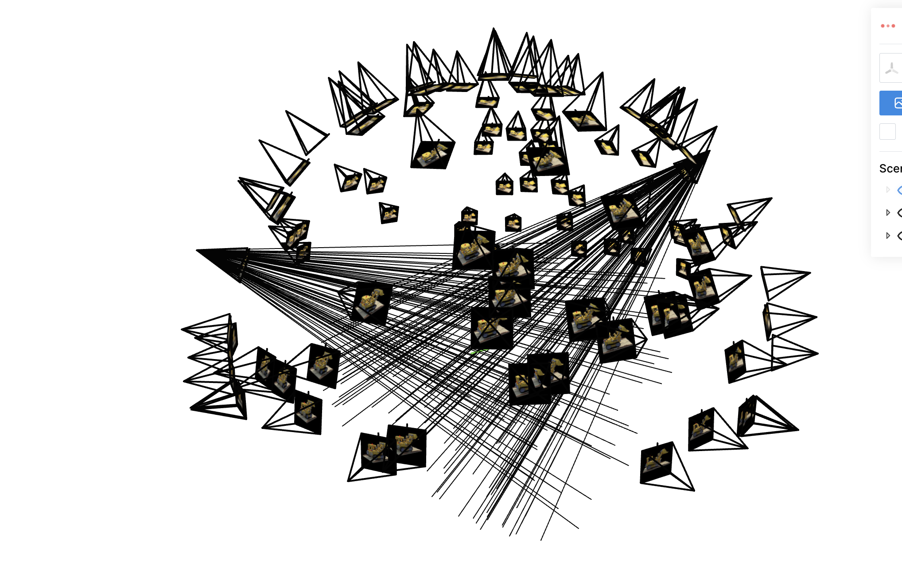
Rays drawn across multiple camera viewpoints.
5. Many cameras — rays + samples
Finally, --case multi_cam_samples adds stratified 3D samples
along each ray. The resulting point cloud fills the volume in front of
the object and shows the exact spatial distribution where the NeRF MLP
will be queried during training.
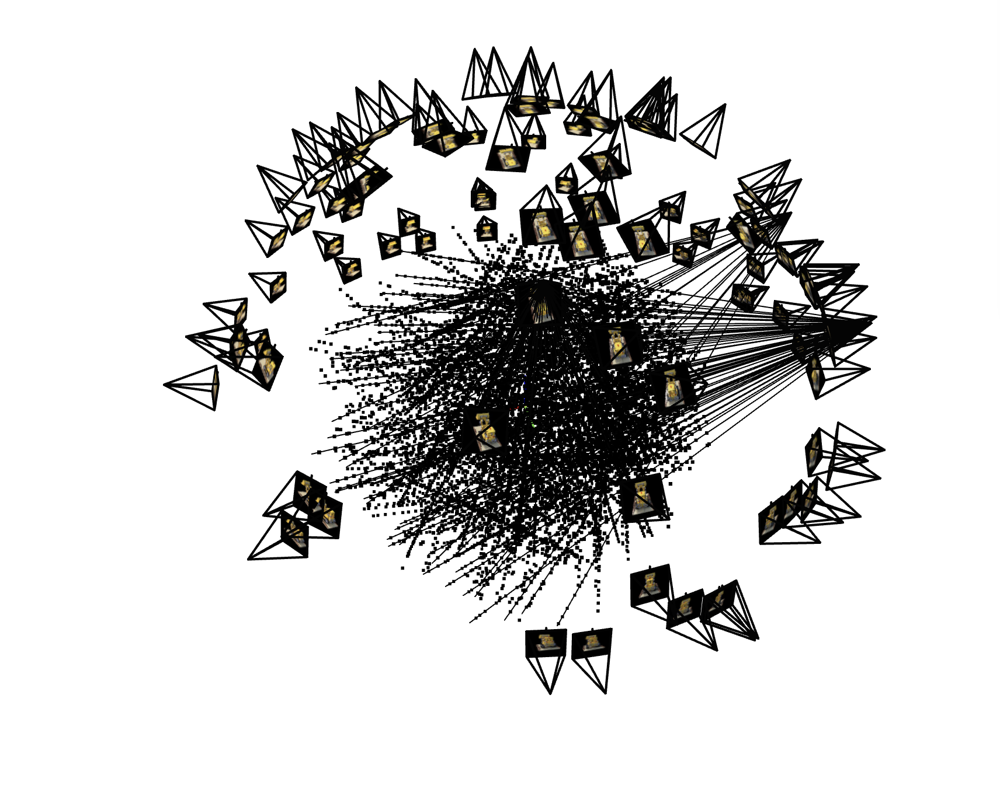
Ray sampling with stratified points across multiple views.
Together, these viser visualizations confirm that the multiview dataloader
is behaving correctly before moving on to the actual NeRF optimization in
Parts 2.4–2.6.
The network takes a 3D point and its viewing direction. Both are positionally encoded:
x gets a high-frequency encoding (L_xyz = 10) so the model can represent
sharp geometry; d uses a lower frequency (L_dir = 4) since view-dependent
effects are smoother.
The encoded position passes through 8 fully-connected layers of width 256 with ReLU.
After layer 4 I concatenate the original PE(x) back in (skip connection) so deeper layers
still have direct access to the input coordinates instead of relying only on compressed
features. From this shared trunk I branch into:
a density head (linear → ReLU) that predicts a single scalar
σ(x) used in volume rendering; and
a color pathway where a 256-D feature is concatenated with the encoded
direction PE(d) and mapped to RGB with a small MLP (256+27 → 128 → 3, Sigmoid). This makes
color explicitly view-dependent, which is needed for specularities and shading changes.
All linear layers are Xavier-initialized with zero bias; densities are ReLU-clamped,
colors are in [0,1] via Sigmoid. This is the network used in the training
and rendering loops in Parts 2.5 and 2.6.
Network diagram
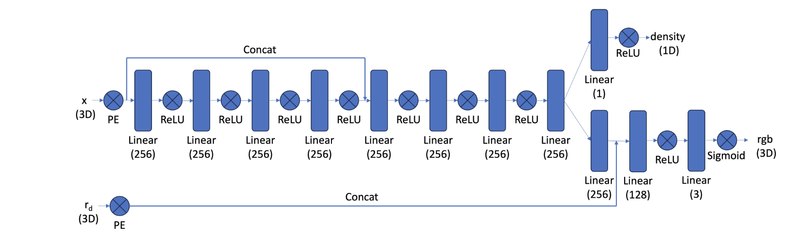
NeRF MLP used in my implementation: PE(x) → 8×256 MLP with a skip at layer 4,
branching into a density head and a view-conditioned color head.
Part 2.5 — Volume Rendering
In this part I connect the NeRF network from 2.4 to a differentiable volume renderer.
The renderer marches along each ray, queries the MLP at many 3D points, and then
combines those samples into a final pixel color, depth, and opacity. The same
infrastructure is reused for training views, validation views, and novel test views
(the spherical video).
Implementation overview
Sampling along rays.sample_along_rays creates evenly spaced depth values between
near and far, optionally with a bit of random jitter
after a warm-up. These depths are turned into 3D points by
origin + t * direction, and the 3D direction is attached to every
point along that ray.
NeRF MLP.
For each 3D sample point I feed the point and view direction into the NeRF network.
It outputs a density σ (how much the ray “stops” there) and an RGB
color c (what color that tiny bit of volume emits).
Volume rendering.volume_render implements the core rendering equation:
for each sample i with density σᵢ and color cᵢ:
αᵢ = 1 − exp(−σᵢ Δᵢ) — how much of the ray is absorbed in that interval
Tᵢ = ∏ⱼ<i (1 − αⱼ) — transmittance (how much light survives from camera to i)
wᵢ = αᵢ Tᵢ — contribution weight of that sample
RGB = Σᵢ wᵢ cᵢ, depth = Σᵢ wᵢ tᵢ, acc = Σᵢ wᵢ
Everything is written in PyTorch so gradients flow back into the MLP.
volrend vs volume_render.volrend is a tiny helper that uses a constant step size
Δ = (far−near)/S and only returns RGB. It is there to exactly match the
unit test provided in the spec. The actual training loops use the more general
volume_render, which also returns depth and accumulated opacity.
Evaluation helpers.render_image_all renders a full image for one camera by looping over
all its rays in chunks. eval_psnr_on_val renders the 6 validation
cameras and averages PSNR. render_spherical loops over
c2ws_test to make the novel-view video/GIF.
Data & device. I train on the provided Lego dataset
(data/lego_200x200.npz) using Apple’s MPS backend on my Mac.
Training length.iters = 5000 means 5,000 gradient
steps. Each step uses batch = 4096 random rays.
Sampling. Along each ray I take n_samples = 64 points
between near = 2.0 and far = 6.0 units along the ray.
Network size. The NeRF MLP has 8 layers of width 256:
L_xyz = 10 frequencies for 3D position (high detail),
L_dir = 4 frequencies for view direction (smoother effects),
and a skip connection at layer 4 (skip_at = 4).
Optimization. I use Adam with learning rate
lr = 0.003, training for 5,000 iterations. Logging and rendering happen
every 100 iterations.
Randomness / jitter. After
jitter_after = 1000 iterations I turn on stratified jitter
(jitter_scale = 0.5) so that each ray sees slightly different depths
and the model covers the volume more densely.
Outputs. Everything gets written to
outputs_part2_4_5000, including intermediate renders, depth/opacity
images, metrics, and the final model.
Rays, samples, and cameras during training
Before and during training, I use the same ray sampler and camera poses as in my
multiview setup to visualize what a single training step “looks like” in 3D.
Each view below shows up to 100 rays, their sampled 3D points, and the training
cameras, which matches the “rays + samples + cameras” deliverable.
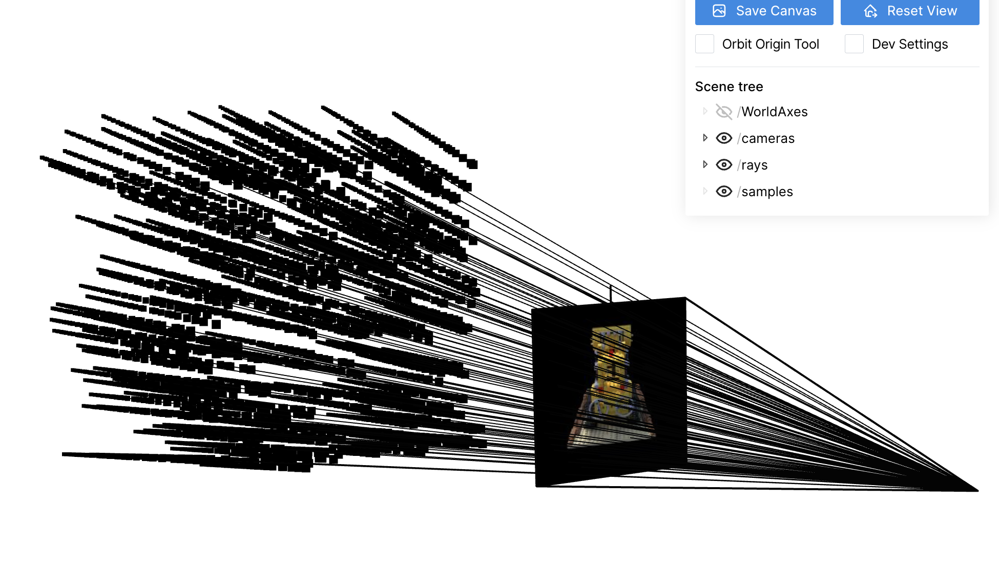
One training camera with up to 100 rays and their sampled 3D points.
This matches a single training step’s batch from that view.
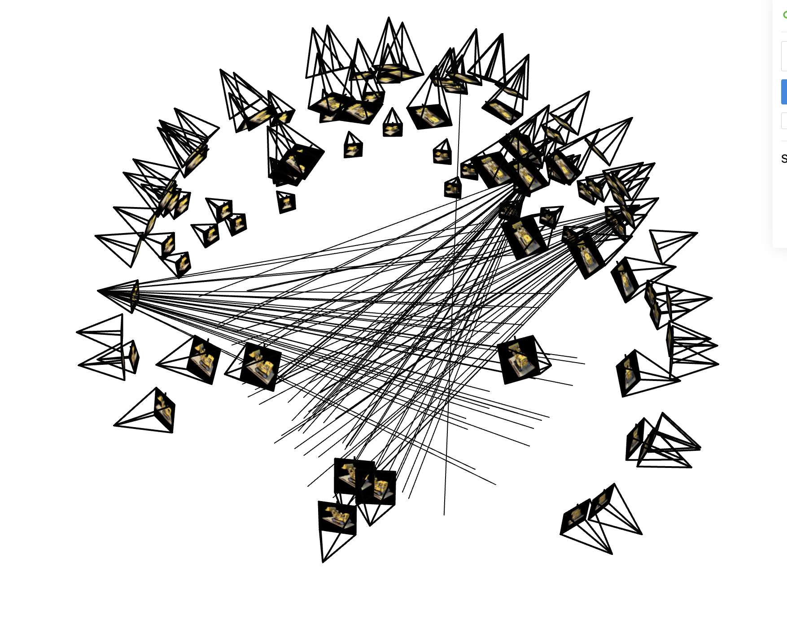
Multiple training cameras with rays only. This checks that ray origins stay
glued to the correct camera centers and point into the scene.
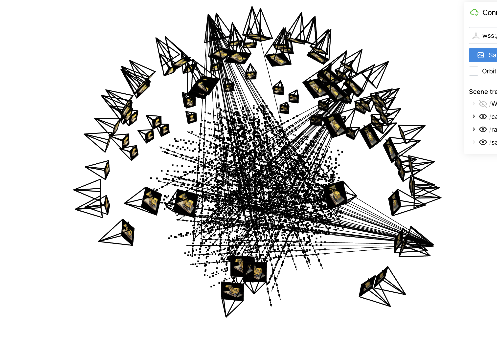
Rays and sample points drawn across several training cameras (≤100 rays shown).
These are the exact samples that get fed into the NeRF during optimization.
Training progression — validation view
Here I render a fixed validation camera every 1,000 iterations and compare
against the ground-truth Lego image. As training proceeds the render sharpens,
occlusions become correct, and the PSNR curve rises.
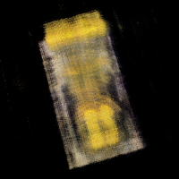
iter 250
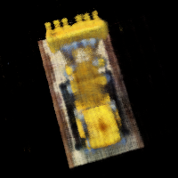
iter 500
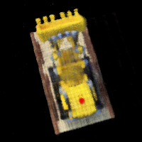
iter 700
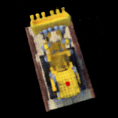
iter 1,000
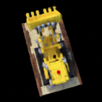
iter 2,000
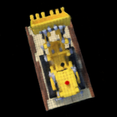
iter 3,000
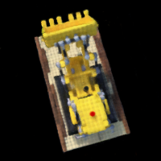
iter 4,000iter 4,500iter 5,000
Training progression — train view
The same checkpoints from the training camera. This view was part of the training
set, so it usually becomes sharper slightly sooner than the held-out validation view.
iter 200iter 500
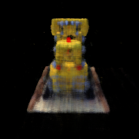
iter 700
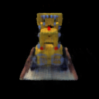
iter 1,000
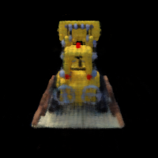
iter 2,000iter 3,000
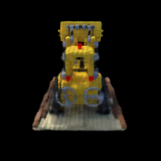
iter 4,000
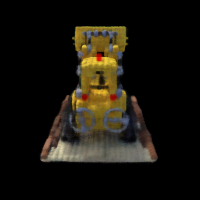
iter 4,500iter 5,000
Depth and accumulated opacity
Depth is the weighted average of sample depths along each ray, using the same
weights that form the color. Accumulated opacity (Σ wᵢ) shows how much “stuff”
the ray passes through and highlights the silhouette of the object.
Training PSNR vs iteration (mini-batch).Validation PSNR over training for a single held-out camera.
How to read the validation PSNR curve (single camera):
- I hold one camera out as validation and never train on its image.
- At each checkpoint I render that view and compute PSNR versus the ground truth.
- Early on, PSNR is low (the render is blurry and wrong).
- As the NeRF learns geometry and appearance, the curve rises and then flattens
around > 23 dB.
- Once it plateaus, extra iterations mostly refine tiny details rather than
giving big global improvements.
Spherical rendering (novel views via c2ws_test)
Finally, I render novel views from the test camera trajectory c2ws_test.
Each frame is produced by the same NeRF and volume renderer; only the camera pose
changes. The GIF loops continuously, and the button below lets you restart it.
Novel views rendered along the provided test trajectory. Clicking the button
reloads the GIF so you can watch the rotation again from the beginning.
Checklist of required deliverables
Brief description of how each part is implemented:
sampling, volume rendering, NeRF MLP, PSNR, and spherical rendering (see
“Implementation overview” and config explanation above).
Visualization of rays and samples with cameras:
the three viser views from Part 2.3 (cameras, rays, and sample points) used
by the same sampler as in 2.5.
Training progression:
grids of predicted train/validation images at multiple iterations.
Metrics:
training loss vs iteration and a validation PSNR curve for the held-out view
(with explanation of what the curve means).
Novel view rendering:
spherical Lego video/GIF rendered from the provided c2ws_test poses,
with a button to restart the animation.
Part 2.6 — NeRF on My Own Data
In this part I stopped using the synthetic Lego dataset and trained a NeRF on my own photos:
a small duck sitting next to an ArUco tag on a table. I reused the calibration and dataset
pipeline from Part 0 to turn my raw phone images into a clean NeRF dataset
my_scan_clean.npz, then trained a NeRF and rendered novel views of the scene.
Implementation overview
Dataset construction. Starting from my original photos, I:
(1) calibrated the camera and estimated distortion, (2) undistorted each image,
(3) cropped away black borders, (4) resized everything to a common resolution
(≈800×600), and (5) stored the images plus camera poses in
my_scan_clean.npz. This step is handled by my
part0_make_dataset_*.py scripts.
Camera intrinsics. The dataset stores a rectified camera matrix
K_rect whose focal length and principal point already match the
undistorted images. I load K_rect directly and use it to generate
rays for NeRF.
NeRF model. I reuse the same NeRF MLP from Part 2.4:
3D point + view direction go through positional encodings, then a deep MLP
outputs color and density at every 3D sample point. The density controls how
“solid” the point is; volume rendering turns all those samples along a ray into
a final pixel color.
Sampling and scene scale. Real scenes are much closer to the camera
than the Lego toy in the starter code. I choose
near ≈ 0.03 m and far ≈ 0.45 m, which roughly
bracket the duck and the table. I use 64–128 samples per ray so the network can see
enough detail along each ray.
Training. I sample random rays from all training images, compute
the volume-rendered color along each ray, and use MSE loss between the predicted
color and the ground-truth pixel color. I optimize with Adam, a batch of thousands
of rays per iteration, and log:
training loss
training PSNR
a lightweight validation PSNR using a few held-out views
Novel-view GIFs — camera circling the duck
The main deliverable is a GIF showing the camera moving around the object and
rendering novel views from the trained NeRF.
Second orbit: a more vertical circular motion showing top/bottom angles.
Final curated orbit GIF for my duck scene (horizontal path).
Training curves — loss and PSNR
I logged training loss, training PSNR, and a quick validation PSNR into
metrics.csv (columns: iter, loss, psnr, val_psnr) and
plotted them for this run.
Training loss vs. iteration (log scale). The curve drops quickly at the
beginning and then flattens as the NeRF finishes fitting the main geometry
and colors of the duck scene.
Train vs. validation PSNR. Training PSNR steadily increases into the low
20 dB range. Validation PSNR stays lower and a bit noisy, which matches
the fact that my real-world poses and intrinsics are not perfect, so the model
fits the training rays better than unseen viewpoints.
Intermediate renders while training
To show how the NeRF improves over time, I rendered one training camera and one
validation camera at six checkpoints: 1k, 2k, 3k, 4k, 5k, and 6k iterations.
You can see the duck gradually “carve itself out” of noise.
Training views over time
1,000 iterations — still quite blurry; coarse shape only.2,000 iterations — main colors and duck outline become clearer.3,000 iterations — sharper edges on the duck and the table.4,000 iterations — most details are in place; small noise remains.5,000 iterations — incremental sharpening and denoising.6,000 iterations — final train view used for the GIF renders.
Validation views over time
1,000 iterations — heavily blurred; scene barely recognizable.2,000 iterations — duck and table begin to appear.3,000 iterations — geometry mostly correct but still soft.4,000 iterations — sharper, but artifacts appear near edges.5,000 iterations — quality still improving, but slower.6,000 iterations — final validation view; good structure but noisier than train.
Overall, the model fits the training views well and produces recognizable validation
views and smooth orbits around the duck. The gap between training and validation PSNR,
plus the slight blur and artifacts in the validation renders, are consistent with
small calibration errors and pose noise in the real-world dataset.


 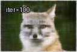
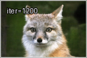
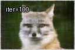
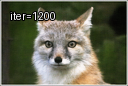